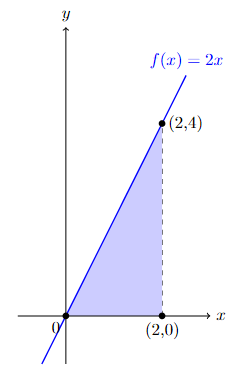
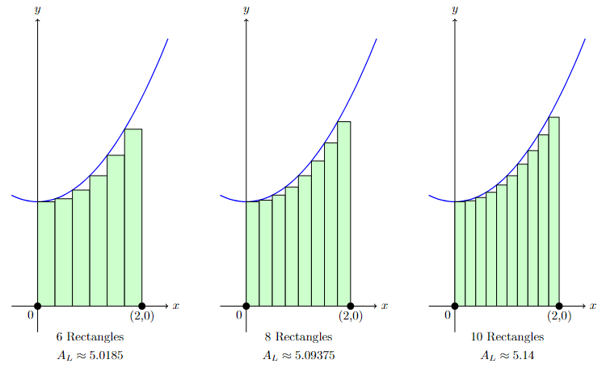

5. Integrals#
Below is the list of topics that are covered in this section:
Antiderivative and Indefinite Integrals
Area Problem and Definite Integrals
Fundamental Theorems of Calculus
Improper Integrals
Average Value
Area Between Curves
5.1 Antiderivative and Indefinite Integrals#
In the previous section we worked with derivatives. One easy example with power rule is that the derivative of \(f(x)=x^2\) is \(f\,'(x)=2x\).
What if we would like to reverse this process? What is a function \(f(x)\) that has derivative \(2x\)?
Note that \(x^2\) is not the only such function as \(x^2+3, x^2-5, x^2+66, x^2-\pi\), in general \(x^2+C\) for any constant \(C\), are all derived into \(2x\).
Given a function \(f(x)\).
An antiderivative of \(f(x)\) is any function \(F(x)\)
such that \(F\,'(x)=f(x)\).
If \(F(x)\) is an antiderivative of \(f(x)\), then the general antiderivative of \(f(x)\) is called an indefinite integral, denoted
here \(C\) is a constant.
The symbol \(\int\) is called the integral symbol
\(f(x)\) is called the integrand
\(x\) is called the integration variable
\(C\) is called the constant of integration
In this case we say we are integrating \(\boldsymbol{f(x)}\) with respect to (w.r.t.) \(x\).
Properties of the Indefinite Integral#
Constant multiple can be factored out the indefinite integral
Indefinite integral of the sum or difference of functions
Basic Antiderivative Formulas#
Antiderivative formulas for some basic integrands:
Constant
Power Rule
Power of \(-1\)
Exponential
Exponential when \(b=e\)
Sine
Cosine
Integration by U-substitution#
On the Derivative section, we already see how Chain Rule is used to find the derivative of a composition of two functions.
Similarly, there is a tool that can be used to find an antiderivative of certain functions involving composition of functions.
Rule:
Note that to use this rule, the integrand must contain a composition function \(f\left(g\left(x\right)\right)\) multiplied with the derivative of the inside function \(g(x)\).
Steps for U-subs
Find \(u\), which is the inside function
Find \(du\) in terms of \(x\) and \(dx\)
Substitute the integrals, if done correctly will only have integration in terms of variable \(u\), not the original variable.
Integrate
Substitute back the \(u\) in terms of the original variable.
Example
Determine \(\displaystyle\int 6x^2\left(x^3+8\right)^5\, dx\).
The “inside function” here is \(x^3+8\), which derivative is \(3x^2\). Hence, set up the integration as such, then do the steps above:
Steps:
\(u=x^3+8\)
\(du=3x^2 \,dx\)
Substitute \(u\) and \(du\):
\(2\cdot \displaystyle\int \underbrace{\left(x^3+8\right)}_{u}^5\cdot \underbrace{3x^2\,dx}_{du} = 2\cdot \displaystyle\int u^5\,du\)Integrate:
\(2\cdot \displaystyle\int u^5\,du=2\cdot \dfrac{u^6}{6}+C\)Substitute back to \(x\):
\(2\cdot \dfrac{u^6}{6}+C=2\cdot \dfrac{\left(x^3+8\right)^6}{6}+C=\dfrac{\left(x^3+8\right)^6}{3}+C\)
Hence:
Integration by Parts (IBP)#
On the Derivative section, we already see how Product Rule is used to find the derivative of a product of two functions.
Similarly, there is a tool that can be used to find an antiderivative of certain functions involving product of two functions.
Rule
or, more commonly remembered as:
A common issue with this set up is deciding which factor of the product should be \(u\) and which one should be \(dv\). While there are many “tricks” offered by some resources, there are no official rules on which factor is which. If one set up does not work, we can always try the other set up. Repetitive practice is the best way to develop the sense of recognizing which factor is “a good choice” to be \(u\) or \(dv\).
Example
Determine \(\displaystyle\int x\cdot e^{3x}\,dx\)
First choose the \(u\) and \(dv\):
$\(u=x \qquad dv=e^{3x} \,dx\)$
Next, find \(du\) and \(v\):
Thus:
Now, try to do \(u=e^{3x}\) and \(dv=x\,dx\) instead, what happen?
Note that both U-Subs and IBP are used to work on product of two functions, with the restriction on U-Subs being stricter. Hence, there are indefinite integrals that can be evaluated using either U-Subs and IBP.
Below is a code example that ask user for the integrand \(f(x)\), and returned the general antiderivative \(\displaystyle\int f(x)\,dx\).
import sympy as sp
def find_antiderivative():
# Prompt the user for the function f(x)
function_input = input("Enter the function f(x): ")
# Define the variable and function using sympy
x = sp.Symbol('x')
f = sp.sympify(function_input)
# Compute the antiderivative of f(x)
antiderivative = sp.integrate(f, x)
# Return the general antiderivative
return antiderivative
# Run the function to find the antiderivative
antiderivative = find_antiderivative()
# Print the general antiderivative
print("General Antiderivative:")
print(antiderivative)
---------------------------------------------------------------------------
StdinNotImplementedError Traceback (most recent call last)
<ipython-input-2-e6399b08dba9> in <module>
1 # Run the function to find the antiderivative
----> 2 antiderivative = find_antiderivative()
3
4 # Print the general antiderivative
5 print("General Antiderivative:")
<ipython-input-1-7462626903df> in find_antiderivative()
3 def find_antiderivative():
4 # Prompt the user for the function f(x)
----> 5 function_input = input("Enter the function f(x): ")
6
7 # Define the variable and function using sympy
~/anaconda3/lib/python3.8/site-packages/ipykernel/kernelbase.py in raw_input(self, prompt)
855 """
856 if not self._allow_stdin:
--> 857 raise StdinNotImplementedError(
858 "raw_input was called, but this frontend does not support input requests."
859 )
StdinNotImplementedError: raw_input was called, but this frontend does not support input requests.
5.2 Area Problem and Definite Integrals#
Unlike indefinite integrals, definite integrals don’t come from reversing the process of evaluating derivative. Definite integrals comes from Area Problem.
Analogically, the area problems to definite integrals is just like RoC problems to derivatives.
The goal of the area problem is to find the area of the region between the graph of \(f(x)\) and the \(x\)-axis. If that region has a common two-dimensional shapes, then it is enough to use basic geometry to find the area.
Example
Find the shaded area formed by the function \(f(x)=2x\) and the \(x\)-axis on the interval \([0,2]\).

Note that the area is simply a triangle area with base \(2\) and height \(4\). Hence the area is \(\frac{1}{2}\cdot 2\cdot 4=4\).
{kind=link}
Now, how about finding the shaded area formed by the function, say, \(f(x)=0.5x^2+2\) and the \(x\)-axis on the interval \([0,2]\)?

While we might not able to calculate this area exactly using high school 2D geometry, we can do an estimation.
Estimating the area can be done by dividing the interval into several subintervals, and in each subinterval create a rectangle whose height is using the function value at a specific point in that subinterval.
The approximation of the area is then obtained by adding the total area of all rectangles.
Below are the example if we divide the interval \([0,2]\) into 4 subintervals, and use certain points as the height of each rectangle:

As their name suggests, the Left Sum, Middle Sum (Midpoint Rule), and Right Sum are using the function values at the left endpoints, midpoints, and right endpoints, respectively, as the height of the rectangles.
Since this example divides the interval \([0,2]\) into 4 subintervals, then the width of each rectangle is \(\frac{2-0}{4}=0.5\).
Let \(A_L,A_M,\)and \(A_R\) denotes the area approximation using the Left, Middle, and Right sum, respectively. Then:
$$
$$
In this particular example, the Left Sum clearly gives an underestimate as all the rectangles’ heights are below the graph of \(f(x)\), meanwhile the Right Sum gives an overestimate as all the rectangles’ heights are above it. The Midpoint Rule seems to give the least error from the figure as the height of the rectangles are closer to the value on the actual graph.
Illustrated below the approximation using Left Sum on 6, 8, and 10 rectangles:

{kind=link}
Even though graphically we can see the increase in accuracy when the number of rectangle increase, how should we know the actual area?
Let \(n\) denotes the number of rectangles, \(\Delta x\) denotes the width of each rectangle, and \(x_1,x_2,\ldots,x_n\) denotes the points in the interval \([a,b]\) which values on those points are used as the height of the rectangle.
The area approximation is then:
$\(
A \approx \Bigl[f\left(x_1\right)+f\left(x_2\right)+\ldots+f\left(x_n\right)\Bigr] \cdot \Delta x \qquad \text{or} \qquad A \approx \sum\limits_{i=1}^n f\left(x_i\right) \cdot \Delta x
\)$
The summation above is what we call Riemann Sum.
Now, increasing the number of rectangles \(n\) gives better approximation of the area. In fact, taking limit as \(n\to \infty\) gives the actual area.
This limit of Riemann Sum as \(n\) goes to infinity is the definite integral, denoted as follow:
$\(
\int_a^b f(x)\,dx = \lim_{n\to \infty} \sum\limits_{i=1}^n f\left(x_i\right) \cdot \Delta x
\)$
For our previous example \(f(x)=0.5x^2+2\) and the \(x\)-axis on the interval \([0,2]\):
For \(n\) subintervals, the width of each subinterval is \(\Delta x=\dfrac{2-0}{n}=\dfrac{2}{n}\), and hence the subintervals are:
As \(n\) is large, without lost of generality we can take the right endpoint as the height of each rectangle. The right endpoint of the \(i^{\text{th}}\) subinterval is \(x_i=\dfrac{2i}{n}\).
The Riemann Sum then become:
Computing the integral:
That is certainly a tedious work even for a simple function like \(f(x)=0.5x^2+2\). On the next part we will learn a simpler way to do this area calculation.
Below is the code to calculate Riemann Sum of \(f(x)\) on the interval \([a,b]\) using \(n\) intervals.
def riemann_sum():
#Function can be edited as needed
f = lambda x: 0.5 * x ** 2 + 2
# Prompt the user for the type of Riemann sum
sum_type = input("Choose Riemann sum type (left, right, or midpoint): ")
# Prompt the user for inputs
a = float(input("Enter the left endpoint (a): "))
b = float(input("Enter the right endpoint (b): "))
n = int(input("Enter the number of subintervals (n): "))
# Calculate the width of each subinterval
delta_x = (b - a) / n
# Initialize the Riemann sum
riemann_sum = 0
# Calculate the Riemann sum based on the selected type
if sum_type == "left":
for i in range(n):
x = a + i * delta_x
riemann_sum += f(x) * delta_x
elif sum_type == "right":
for i in range(1, n + 1):
x = a + i * delta_x
riemann_sum += f(x) * delta_x
elif sum_type == "midpoint":
for i in range(n):
x = a + (i + 0.5) * delta_x
riemann_sum += f(x) * delta_x
else:
print("Invalid Riemann sum type.")
return riemann_sum
# Call the function to get the Riemann sum
result = riemann_sum()
print("The Riemann sum is:", result)
Choose Riemann sum type (left, right, or midpoint): left
Enter the left endpoint (a): 0
Enter the right endpoint (b): 1
Enter the number of subintervals (n): 4
The Riemann sum is: 2.109375
Properties of Definite Integral#
Before going to the next part, familiarize yourself with the properties of the definite integral below, and think where do they came from based on the relation with the area under the curve.
\(\displaystyle\int_{a}^{b} f(x) \,dx=-\displaystyle\int_{b}^{a} f(x)\, dx\)
\(\displaystyle\int_{a}^{a} f(x) \,dx=0\)
\(\displaystyle\int_{a}^{b} cf(x) \,dx=c\displaystyle\int_{a}^{b} f(x) \,dx\) for any constant \(c\)
\(\displaystyle\int_{a}^{b} f(x)\pm g(x) \,dx=\displaystyle\int_{a}^{b} f(x) \,dx \pm \displaystyle\int_{a}^{b} g(x) \,dx\)
\(\displaystyle\int_{a}^{b} f(x) \,dx=\displaystyle\int_{a}^{c} f(x) \,dx + \displaystyle\int_{c}^{b} f(x) \,dx\) for any constant \(c\)
If \(f(x)\geq g(x)\) for \(a\leq x \leq b\) then \(\displaystyle\int_{a}^{b} f(x) \,dx \geq \displaystyle\int_{a}^{b} g(x) \,dx\)
\(\Bigg\vert \displaystyle\int_{a}^{b} f(x) \,dx \; \Bigg\vert \leq \displaystyle\int_{a}^{b} \vert f(x) \vert \,dx\)
5.3 Fundamental Theorems of Calculus (FTC)#
FTC Part 1#
Theorem (FTC 1): For \(f(t)\) continuous function and \(a\) any constant: \(\dfrac{d}{dx}\displaystyle\int_a^x f(t)\,dt=f(x)\).
While many ‘resources’ said that FTC 1 “basically” shows that derivative and integral “cancel each other”, it is not actually that simple.
Motivated students are encouraged to explore the proof of FTC 1 (Hint: Use the Extreme Value Theorem).
Example
If \(F(x)=\displaystyle\int_{-2}^x e^{3t^2}\sin^2\left(2-t^5\right)\), find \(F\,'(x)\).
By FTC 1, \(F\,'(x)=\dfrac{d}{dx} F(x) \,dx = \dfrac{d}{dx} \displaystyle\int_{-2}^x e^{3t^2}\sin^2\left(2-t^5\right) \,dx = e^{3x^2}\sin^2\left(2-x^5\right)\).
When the lower bound is not a constant, or if the upper bound is a more complicated function of \(x\), FTC 1 can still be applied with the help of Chain Rule and integral properties.
\(\dfrac{d}{dx}\displaystyle\int_a^{u(x)} f(t)\,dt = u\,'(x)f(u(x))\)
\(\dfrac{d}{dx}\displaystyle\int_{v(x)}^{u(x)} f(t)\,dt = -v\,'(x)f(v(x))+u\,'(x)f(u(x))\)
Example
\(\dfrac{d}{dx}\displaystyle\int_5^{x^2} \dfrac{t^3-7}{t^2+8}\,dt = 2x \dfrac{\left(x^2\right)^3-7}{\left(x^2\right)^2+8}\).
FTC Part 2#
FTC 2 connect area problem (definite integral) with antiderivative (indefinite integral).
It provide a simpler way to calculate definite integral compared to using the limit of Riemann Sum.
Theorem (FTC 2): If \(F(x)\) is an antiderivative of \(f(x)\) and \(f(x)\) is continuous on \([a,b]\), then:\( \displaystyle\int_a^b f(x)\,dx=F(x)\,\Big\vert_a^b = F(b) - F(a)\).
Example
Let’s visit the example used previously when we discuss Riemann Sum: Calculate \(\displaystyle\int_0^2 0.5x^2+2\, dx\)
Using basic antiderivative formula (in this case, for constant and power function), we have \(\displaystyle\int 0.5x^2+2\, dx = \dfrac{0.5x^3}{3}+2x\), hence by FTC 2: $\( \displaystyle\int_0^2 0.5x^2+2\, dx = \left(\dfrac{0.5x^3}{3}+2x\right) \Bigg\vert_0^2 = \left(\dfrac{0.5(2)^3}{3}+2(2)\right)-\left(\dfrac{0.5(0)^3}{3}+2(0)\right) = \dfrac{4}{3} + 4 =\boldsymbol{\dfrac{16}{3}} \)$ This give the same answer with much lesser efforts compared to using limit of Riemann Sum.
Below is an example code that prompt user for \(f(x)\) and \([a,b]\), then return the value of \(\displaystyle\int_a^b f(x)\,dx\).
import sympy as sp
def definite_integral():
# Prompt the user for the function, lower limit, and upper limit
expression_str = input("Enter the function f(x): ")
a = float(input("Enter the lower limit (a): "))
b = float(input("Enter the upper limit (b): "))
# Convert the input string to a sympy expression
x = sp.symbols('x')
expression = sp.sympify(expression_str)
# Calculate the definite integral
integral = sp.integrate(expression, (x, a, b))
return integral
# Call the function to get the definite integral
result = definite_integral()
print("The definite integral is:", result)
Enter the function f(x): x**3
Enter the lower limit (a): 0
Enter the upper limit (b): 1
The definite integral is: 0.250000000000000
5.4 Improper Integrals#
Consider the area problem on an unbounded interval \((a,\infty]\) or \((-\infty,b]\) or \((-\infty,\infty)\) instead of \([a,b]\).
The definite integral that corresponds to the area problem over such unbounded interval is called improper integral.
To calculate improper integral, we first bound the interval to some number \(N\), then take \(N\to \pm\infty\) as needed:
\(\displaystyle\int_a^{\infty} f(x)\,dx = \lim\limits_{N\to \infty} \displaystyle\int_a^N f(x)\,dx\)
\(\displaystyle\int_{-\infty}^b f(x)\,dx = \lim\limits_{N\to -\infty} \displaystyle\int_N^b f(x)\,dx\)
\(\displaystyle\int_{-\infty}^{\infty} f(x)\,dx = \displaystyle\int_{-\infty}^c f(x)\,dx+\displaystyle\int_c^{\infty} f(x)\,dx =\lim\limits_{N\to -\infty} \displaystyle\int_N^c f(x)\,dx+\lim\limits_{N\to \infty} \displaystyle\int_c^N f(x)\,dx\), for any number \(c\).
Since the area is over an unbounded interval, the area is also possible to be, but not necessarily, unbounded.
If the limit exists, then we said the improper integral to be convergent. Otherwise, we said the improper integral to be divergent.
Example
Determine if the following integrals are convergent or divergent: \(\displaystyle\int_{-\infty}^{\infty} xe^{-x^2}\, dx\).
Using \(u\)-subs with \(u=-x^2\), we have \(\displaystyle\int xe^{-x^2}\, dx = -\dfrac{1}{2}e^{-x^2} + C\). Hence for the improper integral:
A little modification on sympy can be used to enable the code to calculate improper integral.
Below is the modified code so that user can put either -inf (for \(-\infty\)) or inf (for \(\infty\)) as the integral bounds:
import sympy as sp
from sympy import oo
def definite_integral():
# Prompt the user for the function and the bounds
expression_str = input("Enter the function f(x): ")
a_str = input("Enter the lower bound (a) or -inf for negative infinity: ")
b_str = input("Enter the upper bound (b) or inf for positive infinity: ")
# Convert the input strings to sympy expressions
x = sp.symbols('x')
expression = sp.sympify(expression_str)
# Set the lower bound
if a_str == "-inf":
a = -oo
else:
a = float(a_str)
# Set the upper bound
if b_str == "inf":
b = oo
else:
b = float(b_str)
try:
# Calculate the integral
integral = sp.integrate(expression, (x, a, b))
# Check if the integral is finite
if integral.is_finite:
return integral
else:
return "The integral diverges"
except ValueError:
return "The integral diverges"
# Call the function to get the definite integral
result = definite_integral()
print("The definite integral is:", result)
Enter the function f(x): 1/x
Enter the lower bound (a) or -inf for negative infinity: 1
Enter the upper bound (b) or inf for positive infinity: inf
The definite integral is: The integral diverges
5.5 Average Value#
When a continuous function \(f(x)\) is linear, the average value \(f(x)\) on \([a,b]\) is simply \(\frac{f(a)+f(b)}{2}\).
How about the average value of nonlinear continous function \(f(x)\)?
{kind=link}
The average value of continuous function \(f(x)\) on \([a,b]\) is given by \(\dfrac{1}{b-a}\displaystyle\int_a^b f(x)\, dx\).
Motivated students are encouraged to try proving this formula algebraically using Riemann Sum.
An easier way to look at the average value is the height \(h\) such that the area of rectangle with width \((b-a)\) and height \(h\) is equal to the area between \(f(x)\) and the \(x\)-axis on \([a,b]\):
\(h(b-a) =\displaystyle\int_a^b f(x)\,dx \quad \Rightarrow \quad h= \dfrac{1}{b-a}\displaystyle\int_a^b f(x)\,dx\)

Example
Determine the average value of \(f(x)=5\cos(3x)+x\) on \([1,4]\).
Average value is \(\dfrac{1}{4-1}\displaystyle\int_1^4 5\cos(3x)+x\, dx = \dfrac{1}{3} \left(\dfrac{5}{3}\sin(3x)+\dfrac{x^2}{2}\right)\Bigg\vert_1^4 = \dfrac{1}{3} \left[\left(\dfrac{5}{3}\sin(12)+\dfrac{16}{2}\right)-\left(\dfrac{5}{3}\sin(3)+\dfrac{1}{2}\right) \right] \approx 2.12\).
If want to ask user for \(f(x)\) and find the average value for \(f(x)\) on \([a,b]\), remember to check the continuity of \(f(x)\) on \([a,b]\).
import sympy as sp
def calculate_average_value():
x = sp.Symbol('x')
# Prompt user for function f(x) and the interval [a,b]
f_x_str = input("Enter the function f(x): ")
f_x = eval(f_x_str) # Evaluate the function string as a valid Python expression
a = float(input("Enter the left endpoint of the interval (a): "))
b = float(input("Enter the right endpoint of the interval (b): "))
# Check if f(x) is not continuous on [a, b]
is_continuous = True
for point in [a, b]:
if not sp.limit(f_x, x, point, dir='-').equals(sp.limit(f_x, x, point, dir='+')):
is_continuous = False
break
if not is_continuous:
return "f(x) is not continuous on [a,b]"
# Calculate the average value of f(x) on [a,b]
avg_value = sp.integrate(f_x, (x, a, b)) / (b - a)
return avg_value
# Test the function
result = calculate_average_value()
print(result)
Enter the function f(x): x**2
Enter the left endpoint of the interval (a): 0
Enter the right endpoint of the interval (b): 1
0.333333333333333
The Mean Value Theorem for Integrals#
Theorem (MVT for Integrals): If \(f(x)\) is continous on \([a,b]\), then there is a number \(c\) in \([a,b]\) such that \(\displaystyle\int_a^b f(x)\,dx=f(c)\left(b-a\right)\).
Example
Find the number \(c\) that satisfies the MVT for Integrals, for \(f(x)=3x^2+5x-7\) on \([2,4]\).
Since \(f(x)=3x^2+5x-7\) is a polynomial and hence is continuous on \([2,4]\), apply the MVT for Integrals:
$$
$$
Using quadractic formula we get \(c=\dfrac{-5 \pm \sqrt{541}}{6}\), or approximately, \(c\approx -4.7099, 3.0432\).
The only \(c\) value that is in the given interval \([2,4]\) is \(\boldsymbol{c\approx 3.0432}\).
Below is the example code that ask user for a continuous \(f(x)\) on \([a,b]\), and will return the value(s) of \(c\) that satisfy the MVT for integrals.
import sympy as sp
# Prompt user for interval [a, b]
a = float(input("Enter the left endpoint of the interval (a): "))
b = float(input("Enter the right endpoint of the interval (b): "))
# Prompt user for function f(x)
x = sp.symbols('x')
f_x_str = input("Enter the function f(x): ")
f_x = sp.sympify(f_x_str)
# Check if f(x) is continuous on [a, b]
is_continuous = sp.limit(f_x, x, a, '+') == sp.limit(f_x, x, a, '-')
if not is_continuous:
print("f(x) is not continuous on [a, b]")
else:
# Calculate the definite integral of f(x) from a to b
integral = sp.integrate(f_x, (x, a, b))
# Solve the equation f(c) * (b - a) = integral for c
c = sp.symbols('c')
equation = sp.Eq(f_x.subs(x, c) * (b - a), integral)
solutions = sp.solve(equation, c)
# Filter solutions within the interval [a, b]
valid_solutions = [solution for solution in solutions if a <= solution <= b]
# Display the solutions
if valid_solutions:
print("The value(s) of c that satisfy MVT for Integrals on [a,b]:")
for solution in valid_solutions:
print(solution)
else:
print("No valid value of c found in the interval [a, b].")
Enter the left endpoint of the interval (a): 0
Enter the right endpoint of the interval (b): 1
Enter the function f(x): x**2
The value(s) of c that satisfy MVT for Integrals on [a,b]:
0.577350269189626
5.6 Area Between Curves#
We already know that the definite integral \(\displaystyle\int_a^b f(x)\,dx\) gives the area between the graph of \(f(x)\) and the \(x\)-axis over interval \([a,b]\).
Now we want to calculate the area between the graph of two functions.
In general, the area betwen two functions over the interval \([a,b]\) is \(A=\displaystyle\int_a^b (\text{top function})-(\text{bottom function})\,dx\).
To illustrate the idea, consider a specific case where two continuous function \(f(x)\) and \(g(x)\) satisfies \(f(x)\geq g(x)\) on \([a,b]\) with the diagram below.

When the function \(f(x)\) and \(g(x)\) alternate the upper and bottom position, one common way to find the area is to separate the interval \(a\leq x\leq b\) into multiple subintervals where in each subinterval the top and bottom position is consistent. However, the shorter way to do it is to keep the integrand positive using absolute value:
This formula holds no matter which function \(f(x)\) of \(g(x)\) is on the top or bottom.
Similarly, the area between \(x=f(y)\) and \(x=g(y)\) on the interval \(c\leq y\leq d\) is \(A=\displaystyle\int_c^d (\text{right function})-(\text{left function})\,dx\).
In general, the formula is \(A=\displaystyle\int_c^d \Big\vert f(y) - g(y) \Big\vert \,dy\).
Below is an example code that ask user for \(f(x)\), \(g(x)\), and \([a,b]\). It will return the area between the two \(f(x)\) and \(g(x)\) over the interval \([a,b]\).
import sympy as sp
from scipy.integrate import quad
# Prompt user for interval [a, b]
a = float(input("Enter the left endpoint of the interval (a): "))
b = float(input("Enter the right endpoint of the interval (b): "))
# Prompt user for function f(x)
x = sp.symbols('x')
f_x_str = input("Enter the function f(x): ")
f_x = sp.sympify(f_x_str)
# Check if f(x) is continuous on [a, b]
is_f_continuous = sp.limit(f_x, x, a, '+') == sp.limit(f_x, x, a, '-')
if not is_f_continuous:
print("f(x) is not continuous on [a, b]")
else:
# Prompt user for function g(x)
g_x_str = input("Enter the function g(x): ")
g_x = sp.sympify(g_x_str)
# Check if g(x) is continuous on [a, b]
is_g_continuous = sp.limit(g_x, x, a, '+') == sp.limit(g_x, x, a, '-')
if not is_g_continuous:
print("g(x) is not continuous on [a, b]")
else:
# Define the absolute difference between f(x) and g(x)
abs_diff = sp.Abs(f_x - g_x)
# Convert the absolute difference to a callable function
abs_diff_fn = sp.lambdify(x, abs_diff)
# Numerically approximate the integral using quad function
area, _ = quad(abs_diff_fn, a, b)
# Display the result
print("The area between f(x) and g(x) over the interval [a, b] is:")
print(area)
Exercises#
Find the indefinite integral of the following functions.
\(f(x)=\sin\left(\cos\left(x\right)\right)\sin(x)\)
\(g(x)=3x\sqrt[3]{1-2x^2}\)
\(h(x)=\dfrac{3x^5+2x}{\left(x^6+2x^2\right)^3}\)
\(m(x)=x^5\sqrt{x^3+1}\)
Hint: if doing manually, use u-subs twice in the process\(n(x)=x^2\cos(7x)\)
Hint: if doing manually, use IBP twice in the process
For each of the following function at the given interval, find the Riemann Sum with \(n=8\), each using Left, Midpoint, and Right Sum.
\(f(x)=\sin(x)\) on \([0,\pi]\)
\(g(x)=3x^3+5x-7\) on \([-2,6]\)
\(h(x)=x^5\sqrt{x^3+1}\) on \([2,10]\)
Use FTC 2 to compute the following, and determine which Sum (Left/Midpoint/Right) on the previous problem gives the best approximation.
\(\displaystyle\int_0^{\pi} \sin(x)\, dx\)
\(\displaystyle\int_{-2}^{6} 3x^3+5x-7\, dx\)
\(\displaystyle\int_2^{10} x^5\sqrt{x^3+1}\, dx\)
Use FTC 1 to differentiate each of the following integral with respect to \(x\).
\(\displaystyle\int_2^x 7\sin^2\left(t^3-0.2t+9\right)\,dt\)
\(\displaystyle\int_2^{\cos(3x)} \sqrt{17-9t^6}\,dt\)
\(\displaystyle\int_{-5x}^{5x^2} e^{t}-\ln(4t)\,dt \)
Determine if the following integral is convergent or divergent. If convergent, calculate its value. If divergent, explain why.
\(\displaystyle\int_4^{\infty} \dfrac{2}{x^3}\,dx\)
\(\displaystyle\int_{-\infty}^5 e^{2x}+1\,dx\)
\(\displaystyle\int_{-\infty}^{\infty} \dfrac{x^2}{x^3+1}\,dx\)
Find the average value of the given function on the given interval.
\(f(x)=10\ln(x)+x^2\) on \([3,5]\)
\(t(x)=70+950e^{-0.07x}\) on \([0,60]\)
\(g(x)=-\sin\left(\dfrac{1}{2}x\right)+\cos(2x)\) on \(\left[\dfrac{\pi}{2},\pi\right]\)
Find the number \(c\) that satisfies the MVT for Integrals, for \(f(x)=4x^2+5x+6\) on \([-1,5]\).
Find the area of the following:
between \(f(x)=3x\) and \(g(x)=x\left(\sqrt{x}+1\right)\) for \(0\leq x\leq 4\)
between \(f(y)=3y\) and \(g(y)=30y\cdot e^{-0.3y}\) for \(0\leq y \leq 9\)
enclosed by \(f(x)=4-x\) and \(g(x)=(x-1)^2\)
(Hint: find where \(f(x)\) and \(g(x)\) intersects)